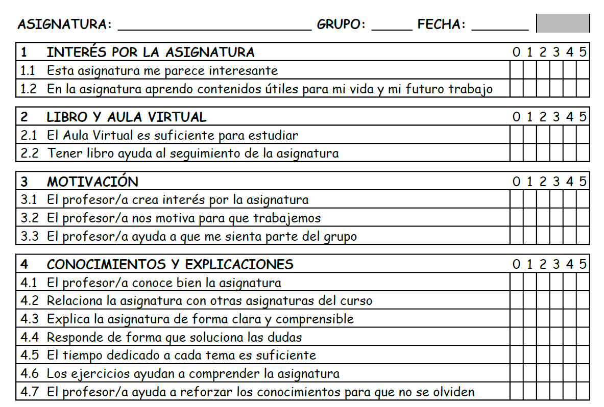

Evaluación de la asignatura¶
Cuestionario anónimo para evaluar las asignaturas de Tecnología.

El cuestionario tiene 6 posibles respuestas (del 0 al 5) de manera que no hay valor central, equivalente al 5 sobre 10. Esto obliga al alumno/a a decantarse hacia un valor mayor o menor de 5.
Todas las frases están escritas de forma afirmativa para no crear confusiones a la hora de puntuar cada item. Cada item deberá puntuarse según se esté de acuerdo con la frase, de manera que un valor 0 significa nada de acuerdo y un valor 5 significa completamente de acuerdo con la frase.
El cuestionario es anónimo para que no reste sinceridad a la hora de responder. Una vez recogidos los cuestionarios se puede añadir un número consecutivo a cada hoja para facilitar la tarea de pasar los resultados a la hoja de cálculo que evalúa los resultados.
Las preguntas de la primera cara del cuestionario pueden dar ideas de mejora para responder las preguntas abiertas de la segunda cara.